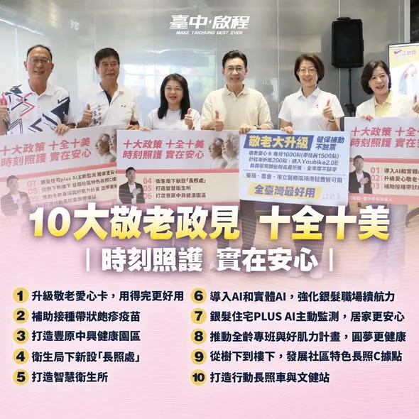
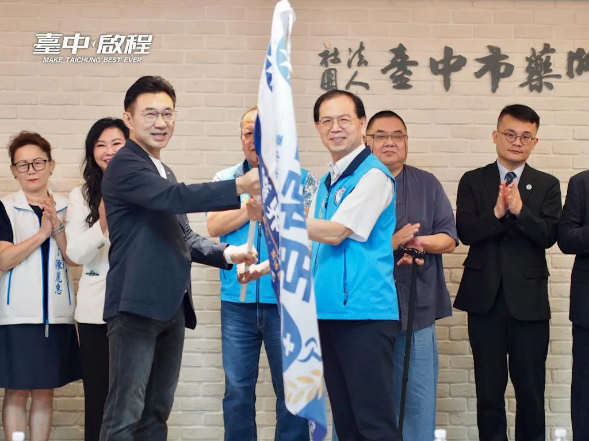
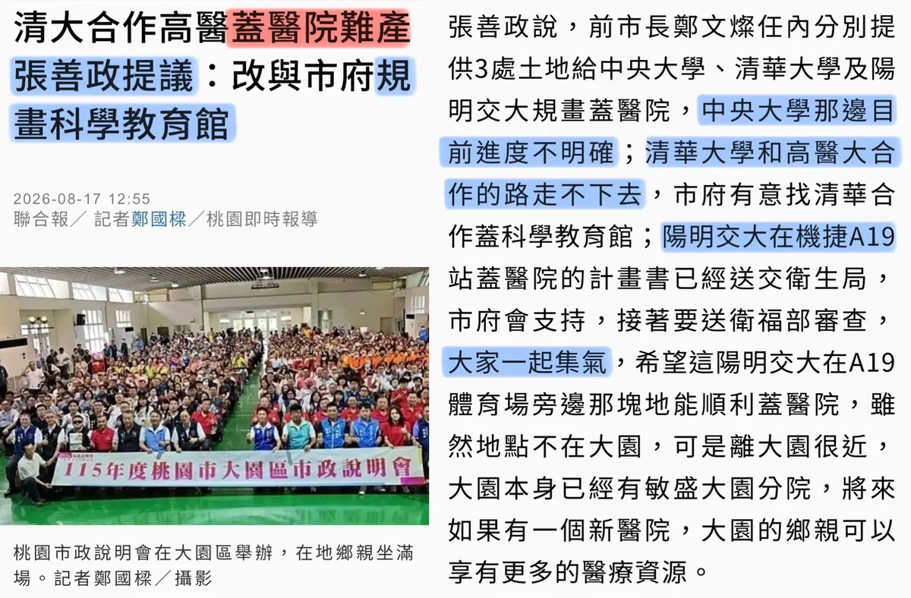
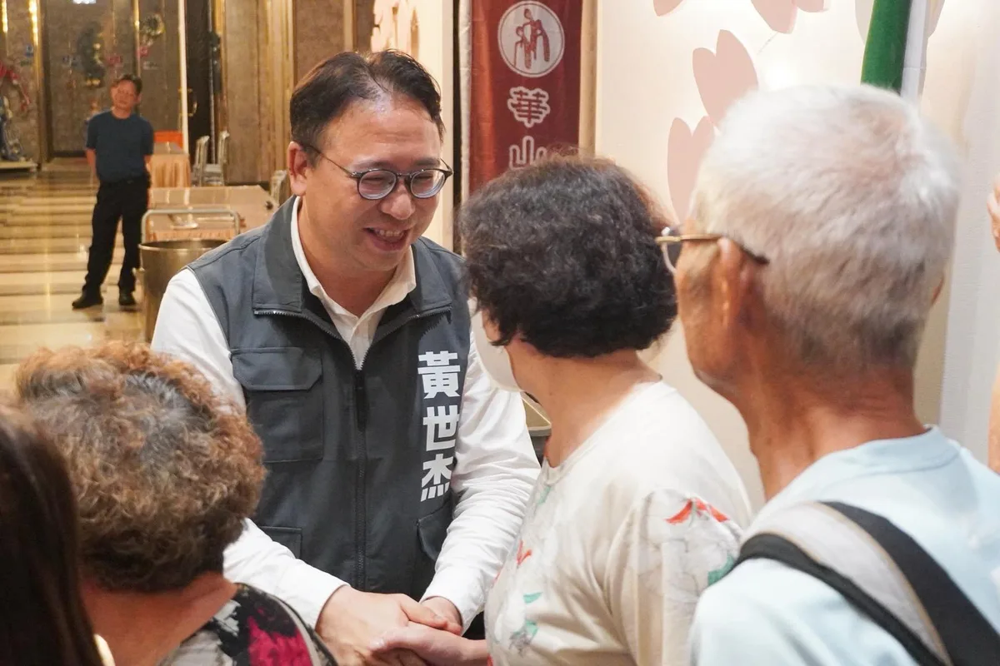
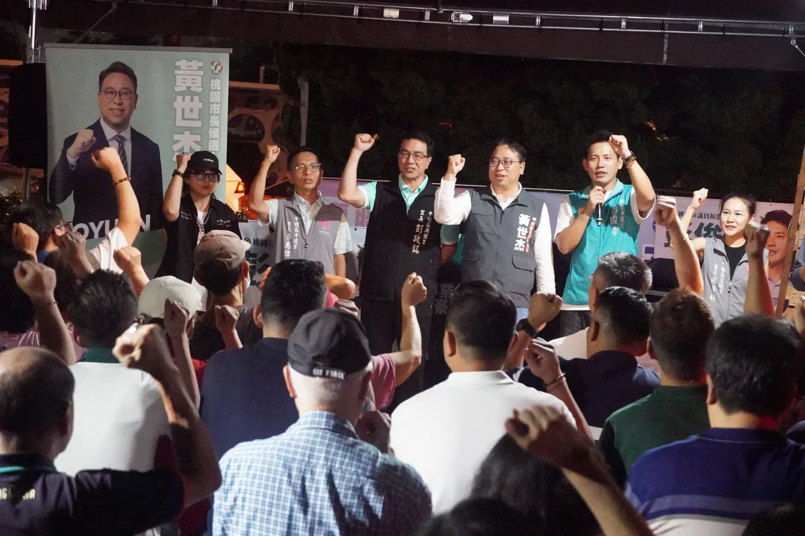
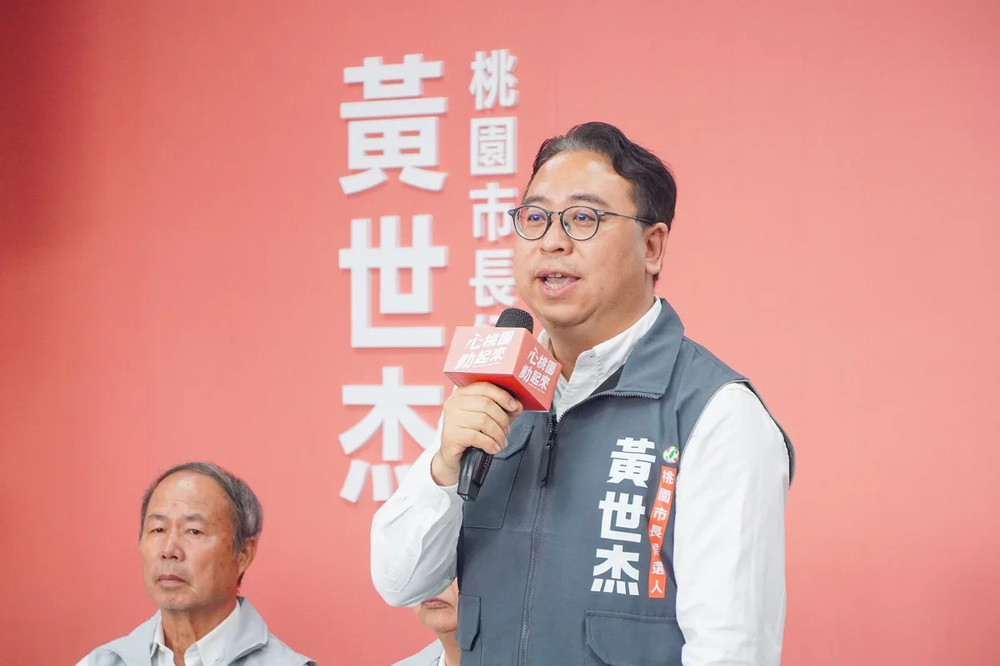
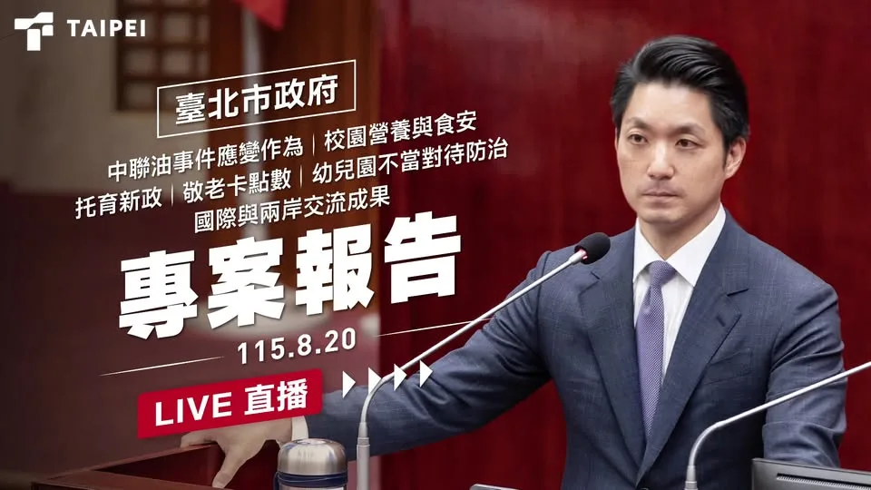
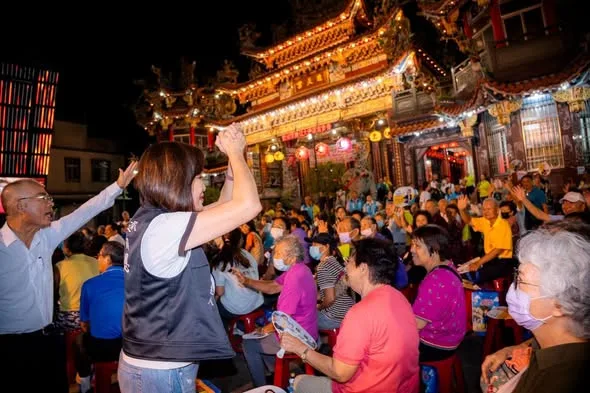
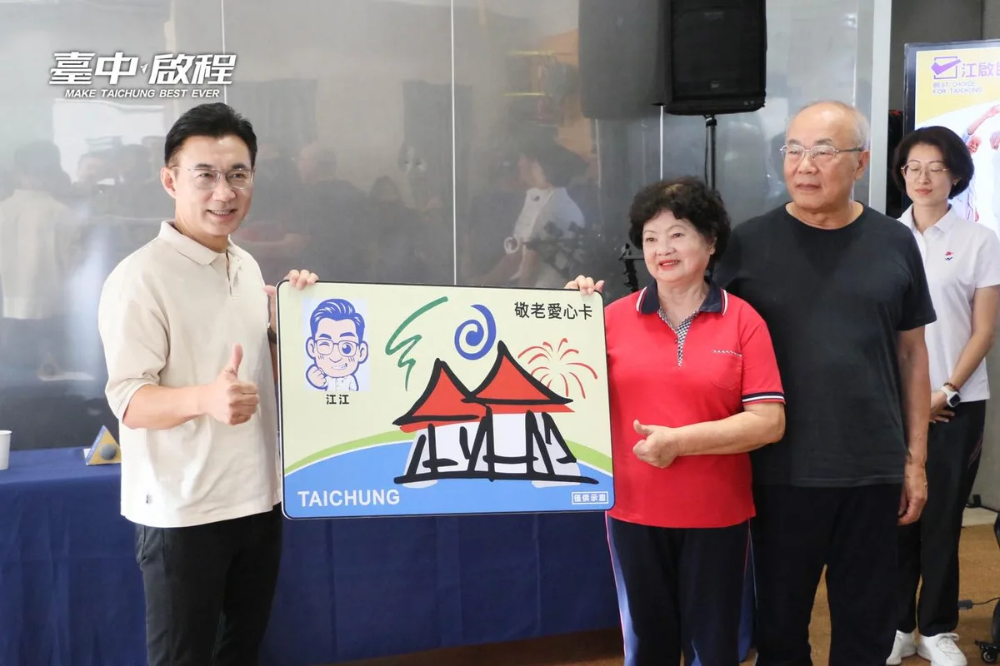

@schuanglawyer:一個人唱會「怕怕」，請出最強神秘嘉賓媽媽一起唱🎤母子合唱〈海海人生〉，唱的是陪伴，也是對家鄉的感情。 桃園就是我們的家。長輩的照顧、交通、醫療、城市的建設發展、年輕人與孩子們的未來，每一件家鄉的事，都是我的事。 距離投票倒數98天🗳️給世杰一個機會，我會用行動，讓桃園更好💖
Posts
@schuanglawyer:一個人唱會「怕怕」，請出最強神秘嘉賓媽媽一起唱🎤母子合唱〈海海人生〉，唱的是陪伴，也是對家鄉的感情。 桃園就是我們的家。長輩的照顧、交通、醫療、城市的建設發展、年輕人與孩子們的未來，每一件家鄉的事，都是我的事。 距離投票倒數98天🗳️給世杰一個機會，我會用行動，讓桃園更好💖
大雨中接著趕到內壢☔️看到這麼多市民朋友，來到「中壢周杰倫」彭俊豪議員 @c_peng 的座談會現場，真的非常感動、也非常感謝。 俊豪已經有三屆議員的歷練跟扎根，還是非常勤勞，我在立委、法務部次長任內，跑行程就常常遇到俊豪。無論是交通、教育、公園到社會福利，只要是市民在乎的事，都能看見俊豪在第一線奔走的認真身影。 對內壢人來說，交通是大家最有感的問題之一，我剛剛從桃園區過來的路上，也塞了很久。這裡人口密集、學校多、工業區通勤需求大，鐵路地下化施工期間的交通壅塞，更是鄉親每天都在面對的問題，如同俊豪所說，現在的中壢就像一個大型工地。 未來世杰進入市政府，會加速推動鐵路地下化、做好施工期間交通配套，重新檢討公車路線與班次，改善校園周邊人行環境，讓軌道、公車、道路與通學安全一起升級。 醫療也是市民最關心的事，中壢以及整個南桃園人口持續成長，但醫療資源跟不上人口增加的速度。未來我會主動媒合醫學中心、大學與醫療體系，優先發展癌症、兒童、高齡及急重症等特色醫療，同時積極為桃園第二座醫學中心布局，讓市民就醫更便利。 感謝大雨中來到現場的市民，還有張火爐主委、興國里彭政銘里長、中建里李應偉里長、舊明里羅善婷里長、中壢車站商圈發展協會湯玟琪理事長，在風雨中堅持來為俊豪跟世杰加油。 好的議員，會為地方爭取、為鄉親發聲。好的市長，則要把這些需求化為政策、把建設加速完成。讓桃園更進步，請支持杰出世代、豪邁前進！讓心中壢，動起來💖

❤️巧慧貼心顧長輩！政見一次看！ 新北市有超過82萬的長者人口，因此照顧長輩，是我擔任新北市長最重要的工作之一，未來我會重點推動： ✅ #敬老卡每月1000點，可以搭公車、買東西，生活更便利。 ✅ 長輩 #假牙補助最高5萬元，有好的牙口吃飯，身體更健康。 ✅ 入住住宿式長照機構補助提升至 #每年24萬元，為家庭減負擔。 ✅ 簡化機構與照顧者行政負擔，讓照顧者能把精力留在專業發揮上。 ✅ 出院後居家服務和輔具 #一次到位，同時帶入專業復能，確保照顧不中斷。 ✅ 發展 #AI智慧照顧，減輕照顧人力負擔，並建立以租代買 平台，降低導入門檻。 未來，我不但會推動長輩福利、提高長照量能與補助，也會以新觀念成為「照顧者的照顧者」，讓新北長輩安心生活，也實質為家庭、照顧者減輕負擔，打造更溫暖的長照環境！
倒數100天，我們一起讓桃園動起來！找回心動的感覺💖 投入選戰以來，我走遍桃園13區。在街頭巷尾握緊的每一雙手裡，我聽見了太多市民朋友的心酸、心寒、心急與心痛。 我遇到每天在國道與車陣中掙扎的通勤族，回家只能看著孩子的睡臉感到心酸。我遇到剛成家的年輕夫妻，對公托名額的不足感到心寒。我遇到為家鄉奉獻一生的長輩，對未來的醫療安養感到心急。更有無數深愛桃園的市民忍不住問起，這座充滿潛力的年輕城市，發展腳步為什麼慢了下來？ 你還記得「心動」的感覺嗎？你上一次為桃園感到驕傲、感到心動，是什麼時候？ 如果現在的生活讓你感到疲憊，請跟我一起找回對未來的期待。這一次，我們要讓桃園重新動起來！ 交通要動起來，我要全面重整公車路網，加速軌道建設，讓桃園不只是國門，更成為北台灣最關鍵的交通樞紐。 托育要動起來，我要大幅增加公托量能、打造透明托育地圖，當年輕家庭最好的靠山，少一點奔波、多一點安心。 醫療照顧要動起來，我要打造癌症醫院或兒童醫院等特色醫療，讓桃園朝第二座醫學中心邁進。敬老愛心卡升級、老幼健保費補助，也要加速跟上。 市政運作要動起來，我要當在第一線的市長，傾聽基層聲音。在取得充分共識前，停止推動垃圾費隨袋徵收、全面檢討科技執法，讓市政回到解決問題、服務市民的初衷。 桃園是一座多元並蓄的城市。有山、有海、有繁華都會、有純樸農村，有世世代代生活在這裡的老桃園人，也有從台灣各地、甚至世界各地來到這裡打拚的新桃園人。 我們的故事或許不同，但我們渴望家鄉更好的心情是一樣的。我要讓桃園成為讓孩子健康長大、青年勇敢打拚、長輩安心養老，外地人也渴望落腳的新家鄉。 距離11月28日投票，只剩100天。我會繼續走遍每一個需要改變的角落，握緊每一雙手、傾聽市民心聲。 這是一場屬於235萬市民的改變行動。 我是黃世杰，邀請您與我並肩同行，讓桃園重新動起來，找回心動感跟光榮感！ 我會跟所有桃園隊夥伴攜手打拚，總召許家睿議員 @cjcheerup 、黃瓊慧議員 @qn_taiwan 、黃家齊議員 @jack790218 、余信憲議員 @yu.councilor 、李宗豪議員 @tyleehao 、陳雅倫議員 @yalunchenyalunchen 、許清順議員 @scs3242288 、胡家智議員候選人 @jiazhihu1980 、陳治文議員、彭俊豪議員 @c_peng 、魏筠議員 @weiyunin 、張曉昀議員 @vina.lovezhongli 、黃崇真議員 @cchuang_0223 、王珮毓議員 @peiyuwangpeiyu 、鄭淑方議員 @fangfang4826081 、項柏翰議員候選人 @bigelephant.bro 、張佩芸議員候選人 @guanyinmelody 、謝卓儒議員候選人 @choju_hsieh 。用一支漂亮全壘打，扭轉桃園的市政⚾️ 感謝今天出席的競選團隊成員，感謝范振修主委，張雅琳副主委 @ngalimtw 、郭昱晴副主委 @jeankuo329 、湯蕙禎副主委 @huijen1003 、張火爐總督導、北桃園競總黃宗源總幹事、南桃園競總黃仁杼總幹事、陳家濬執行總幹事、後援會郭榮宗總督導。最強桃園隊，正式就位！ 我的發言人團隊，簡智翔 @powerful_chien 、黃宣尹 @mthuang_tpc 、簡伊翎 @yi_ling1.0 也將全力以赴、奮戰到底！ 心桃園 動起來💖
我和視光產業界的好朋友們，一起催生了北台灣第一所醫大視光學系，為台灣培育更多人才，也一起完善隱形眼鏡管理，守護民眾眼睛。現在大家願意站出來為我成立後援會，我非常感動！ 許多長輩深受黃斑部病變或白內障等眼疾所苦，未來市府要深化與眼科院所、驗光所的合作，除了提供 #專業治療，也要主動協助媒合 #視力輔具，維持日常生活品質。 #新時代 #新市長 巧慧當市長，會聚合專業力量，讓人才在新北發光發熱！市民朋友的生活越來越好！
@su.chiaohui:照顧照顧者！做照顧者最堅強的後盾！ 非常感謝今天許多長照產業界的好朋友站出來相挺！我也正式和大家報告我的長照政見： ✅ 加發津貼 加碼照顧照顧者！未來我會針對職業照顧者加發夜間、緊急及困難照顧津貼，給長照從業人員最實質的幫助。 ✅ 補助進修 為了幫助照顧者提升自我專業能力，我將針對職業照顧者補助進修和攻讀學位，為市民朋友培養更多優秀的照顧人才。 ✅ 行政簡化 減輕照顧者和機構的行政負擔，讓優秀的照顧人力可以將最大的心力投入在照顧服務。 ✅ 一次到位 未來我會配合長照3.0，加強醫療與長照銜接，由市府投入專案預算讓居家服務和輔具一次到位，同時帶入 #專業復能，讓照顧持續不間斷。 新時代的新北市，新北隊會是最有能力，帶領各行各業在新北加速發展、更加茁壯的最好選擇。

臺北挺你成家！ 首創 #月子加菜金 每胎3萬元 今天一早我來到文山親子館，和市民朋友報告臺北最新的育兒政策 #月子加菜金 。 身為三寶爸，我陪太太坐過三次月子，深深了解產後調養的重要性，不論是生理、心理都需要時間好好休息；一邊照顧新生兒、一邊苦惱坐月子的開銷，更是許多父母的共同經驗。 因此，臺北市除了現有的生育獎勵金外，將再增加 #每胎三萬元 的月子加菜金，除了要減輕家庭的負擔，更重要的是，每一位媽媽都值得被好好照顧。 好好愛自己，就是給寶貝最好的愛。 除了月子加菜金，我們還有多項政策擴大、加碼的好消息。 #擴大醫療性凍卵補助 協助女性保存未來生育希望 #新手家庭特別門診 專屬於新手爸媽的醫療級育兒後盾 #好孕專車PLUS 補助提高、使用期限延長，讓媽咪安心外出 #8hr電子臨托券 臨托據點4年成長11倍 臨托券9月即將上路 #2至5歲私幼加碼 增加補助並放寬申請排富門檻 #婚育家庭免房地稅 #幸福住宅 降低年輕婚育家庭的居住負擔 #小學就讀安心續租 不限學區住到國小畢業，租期最長12年，提升社宅育兒家庭居住安定感 我上任以來，持續推動許多友善育兒政策，包括生生喝鮮奶、營養午餐免費、育兒減工時不減薪、好孕專車、幸福住宅、婦幼專責醫院、免費8小時電子臨托券、校校有公托、托育補助加碼等，希望持續從食、醫、住、行，全方位支持婚育家庭。 今天是七夕情人節，祝福大家七夕快樂，也祝福每一位爸爸媽媽，都能和心愛寶貝們共度美好時光，陪伴孩子健康成長。
@schuanglawyer:李光達議員 @lee_kung_da 這些年來，勤跑地方、深耕桃園，問政務實認真，只要認為是對的事情，就會努力爭取、堅持到底👍從他掛的競選布條就看得出來，每一面都密密麻麻，把他答應鄉親的承諾一件件實現。 光達長期關注桃園的交通建設，除了目前施工中的捷運，也持續督促市府加快桃園捷運第二階段路網的規劃進度，讓桃園的交通建設加緊腳步，讓市民有更便利、更完善的交通環境。 我和光達都明白桃園是座年輕、有活力的城市。我們希望能把長輩照顧好，讓年輕人敢拚、孩子安心長大、長輩能安心生活，讓每個家庭都能安心生活。 我也提出0到12歲兒童健保費補助，同時增加公共托育量能、建立透明的托育資訊平台及專責窗口。敬老愛心卡也要升級，每月提高至1200點，累積至年底，使用範圍擴大到超商超市、健保藥局、特約院所、農漁會。 未來，無論是交通問題、幼兒教育、長輩照顧，到捷運路網、產業與就業機會我們都會一步一步來，把市民最關心的事情做好。 光達有遠見、有經驗、有專業，未來我也會和光達並肩努力，為桃園每一位市民打拚，把大家對桃園的期待，逐步實現！讓心桃園，動起來❤️

啟臣要打造 #全齡友善臺中 💪 #十全十美 銀髮十大政策正式出爐！ 照顧長輩不能等，家庭壓力也不能只靠自己扛。啟臣將從醫療、長照、交通到科技全面升級： ✅ 敬老愛心卡點數不歸零，擴大交通及醫療使用 ✅ 補助帶狀疱疹疫苗，打造豐原中興健康園區 ✅ 增設長照處、智慧衛生所，導入AI銀髮照護 ✅ 推動好肌力、特色C據點及偏鄉行動長照 政策要做得到，更要照顧得到。啟臣會把服務送進每個社區與偏鄉，讓長輩健康、有尊嚴，家人照顧更安心❤️ #臺中啟程 #打造旗艦城 #十全十美銀髮政策 #敬老卡3C升級 #醫養合一

一起打造全齡幸福的旗艦城！ 感謝臺中藥界好夥伴站出來，作啟臣最堅強的後援！💪 「江啟臣藥界後援會」今隆重成立！感謝臺中地區藥界代表與先進熱情相挺，看到現場送上象徵 #包中 的包子與粽子，啟臣備感溫馨與振奮！❤️ 臺中人口近287萬人，作為 #中部門戶，我們不只要是「幸福宜居」，更要躍升為具國際影響力的 #旗艦城市！所以啟臣希望打造「健康安居、全齡幸福」的臺中，所以提出兩大方案👇 #育兒友善：成立跨局處「婦幼發展委員會」，加碼準公托補助、優化疫苗津貼，打造友善育兒環境。 #安心護老：於衛生局下專責成立「長照處」，擴大敬老愛心卡折抵用途、補貼高風險疫苗並推動智慧衛生所，完善長者照護。 面對AI浪潮，啟臣更宣示要推動精密機械園區升級為機器人製造園區，打造臺中成為 「#TRMC（臺灣機器人製造之都）」，為年輕人創造優質就業機會。 未來市府也將推動AI智慧醫療治理，邀請藥師參與核心決策。啟臣有信心 #帶領臺中、#超越臺中 ，讓臺中躍升為代表臺灣、驚艷世界的「國際旗艦城」🌏 #臺中啟程 #打造旗艦城 #藥師 #臺中味 #TaichungWay #繁榮味 #長照 #婦幼

一個人唱會「怕怕」，請出最強神秘嘉賓媽媽一起唱🎤母子合唱〈海海人生〉，唱的是陪伴，也是對家鄉的感情。 桃園就是我們的家。長輩的照顧、交通、醫療、城市的建設發展、年輕人與孩子們的未來，每一件家鄉的事，都是我的事。 距離投票倒數98天🗳️給世杰一個機會，我會用行動，讓桃園更好💖
大雨中接著趕到內壢☔️看到這麼多市民朋友，來到中壢周杰倫彭俊豪議員的座談會現場，真的非常感動、也非常感謝。 俊豪已經有三屆議員的歷練跟扎根，還是非常勤跑，我在立委、法務部次長任內，跑行程就常常遇到俊豪。無論是交通、教育、公園到社會福利，只要是市民在乎的事，都能看見俊豪在第一線奔走的認真身影。 對內壢人來說，交通是大家最有感的問題之一，我剛剛從桃園區過來的路上，也塞了很久。這裡人口密集、學校多、工業區通勤需求大，鐵路地下化施工期間的交通壅塞，更是鄉親每天都在面對的問題，如同俊豪所說，現在的中壢就像一個大型工地。 未來世杰進入市政府，會加速推動鐵路地下化、做好施工期間交通配套，重新檢討公車路線與班次，改善校園周邊人行環境，讓軌道、公車、道路與通學安全一起升級。 醫療也是市民最關心的事，中壢以及整個南桃園人口持續成長，但醫療資源跟不上人口增加的速度。未來我會主動媒合醫學中心、大學與醫療體系，優先發展癌症、兒童、高齡及急重症等特色醫療，同時積極為桃園第二座醫學中心布局，讓市民就醫更便利。 感謝大雨中來到現場的市民，還有張火爐主委、興國里彭政銘里長、中建里李應偉里長、舊明里羅善婷里長、中壢車站商圈發展協會湯玟琪理事長，在風雨中堅持來為俊豪跟世杰加油。 好的議員，會為地方爭取、為鄉親發聲。好的市長，則要把這些需求化為政策、把建設加速完成。讓桃園更進步，請支持杰出世代、豪邁前進！讓心中壢，動起來💖
❤️巧慧貼心顧長輩！政見一次看！ 新北市有超過82萬的長者人口，因此照顧長輩，是我擔任新北市長最重要的工作之一，未來我會重點推動： ✅ #敬老卡每月1000點，可以搭公車、買東西，生活更便利。 ✅ 長輩 #假牙補助最高5萬元，有好的牙口吃飯，身體更健康。 ✅ 入住住宿式長照機構補助提升至 #每年24萬元，為家庭減負擔。 ✅ 簡化機構與照顧者行政負擔，讓照顧者能把精力留在專業發揮上。 ✅ 出院後居家服務和輔具 #一次到位，同時帶入 #專業復能，確保照顧不中斷。 ✅ 發展 #AI智慧照顧，減輕照顧人力負擔，並建立 #以租代買 平台，降低導入門檻。 未來，我不但會推動長輩福利、提高長照量能與補助，也會以新觀念成為「照顧者的照顧者」，讓新北長輩安心生活，也實質為家庭、照顧者減輕負擔，打造更溫暖的長照環境！
倒數100天，我們一起讓桃園動起來！找回心動的感覺💖 投入選戰以來，我走遍桃園13區。在街頭巷尾握緊的每一雙手裡，我聽見了太多市民朋友的心酸、心寒、心急與心痛。 我遇到每天在國道與車陣中掙扎的通勤族，回家只能看著孩子的睡臉感到心酸。我遇到剛成家的年輕夫妻，對公托名額的不足感到心寒。我遇到為家鄉奉獻一生的長輩，對未來的醫療安養感到心急。更有無數深愛桃園的市民忍不住問起，這座充滿潛力的年輕城市，發展腳步為什麼慢了下來？ 你還記得「心動」的感覺嗎？你上一次為桃園感到驕傲、感到心動，是什麼時候？ 如果現在的生活讓你感到疲憊，請跟我一起找回對未來的期待。這一次，我們要讓桃園重新動起來！ 交通要動起來，我要全面重整公車路網，加速軌道建設，讓桃園不只是國門，更成為北台灣最關鍵的交通樞紐。 托育要動起來，我要大幅增加公托量能、打造透明托育地圖，當年輕家庭最好的靠山，少一點奔波、多一點安心。 醫療照顧要動起來，我要打造癌症醫院或兒童醫院等特色醫療，讓桃園朝第二座醫學中心邁進。敬老愛心卡升級、老幼健保費補助，也要加速跟上。 市政運作要動起來，我要當在第一線的市長，傾聽基層聲音。在取得充分共識前，停止推動垃圾費隨袋徵收、全面檢討科技執法，讓市政回到解決問題、服務市民的初衷。 桃園是一座多元並蓄的城市。有山、有海、有繁華都會、有純樸農村，有世世代代生活在這裡的老桃園人，也有從台灣各地、甚至世界各地來到這裡打拚的新桃園人。 我們的故事或許不同，但我們渴望家鄉更好的心情是一樣的。我要讓桃園成為讓孩子健康長大、青年勇敢打拚、長輩安心養老，外地人也渴望落腳的新家鄉。 距離11月28日投票，只剩100天。我會繼續走遍每一個需要改變的角落，握緊每一雙手、傾聽市民心聲。 這是一場屬於235萬市民的改變行動。 我是黃世杰，邀請您與我並肩同行，讓桃園重新動起來，找回心動感跟光榮感！ 我會跟所有桃園隊夥伴攜手打拚，總召 許家睿 Hsu Chia-Jui議員、黃瓊慧 桃園觀察日記議員、黃家齊議員、余信憲議員、李宗豪議員、陳雅倫 龜山達倫議員、市議員許清順-關心地方大小事議員、胡家智 蘆竹新力量議員候選人、桃園市議員 陳治文議員、彭俊豪議員、魏筠議員、中壢大姊姊張曉昀、黃崇真 Huang Chung-Chen議員、 王珮毓議員、鄭淑方-桃園市議員議員、項柏翰 楊梅新選項議員候選人、張佩芸您同行議員候選人、謝卓儒議員候選人。用一支漂亮全壘打，扭轉桃園的市政⚾️ 感謝今天出席的競選團隊成員，感謝范振修主委，張雅琳 Ngalim Tiunn副主委、郭昱晴副主委、湯蕙禎副主委、張火爐總督導、北桃園競總黃宗源總幹事、南桃園競總黃仁杼總幹事、陳家濬執行總幹事、後援會郭榮宗總督導。最強桃園隊，正式就位！ 我的發言人團隊，簡智翔 理工職男參政治、黃宣尹、簡伊翎也將全力以赴、奮戰到底！ 心桃園 動起來💖
我和視光產業界的好朋友們，一起催生了北台灣第一所醫大視光學系，為台灣培育更多人才，也一起完善隱形眼鏡管理，守護民眾眼睛。現在大家願意站出來為我成立後援會，我非常感動！ 許多長輩深受黃斑部病變或白內障等眼疾所苦，未來市府要深化與眼科院所、驗光所的合作，除了提供 #專業治療，也要主動協助媒合 #視力輔具，維持日常生活品質。 #新時代 #新市長 巧慧當市長，會聚合專業力量，讓人才在新北發光發熱！市民朋友的生活越來越好！
照顧照顧者！做照顧者最堅強的後盾！ 非常感謝今天 #張婉玲 理事長、#潘政聰 榮譽理事長、#賴添福 榮譽理事長和許多長照產業界的好朋友站出來相挺！我也正式和大家報告我的長照政見： ✅ 加發津貼 加碼照顧照顧者！未來我會針對職業照顧者加發夜間、緊急及困難照顧津貼，給長照從業人員最實質的幫助。 ✅ 補助進修 為了幫助照顧者提升自我專業能力，我將針對職業照顧者補助進修和攻讀學位，為市民朋友培養更多優秀的照顧人才。 ✅ 行政簡化 減輕照顧者和機構的行政負擔，讓優秀的照顧人力可以將最大的心力投入在照顧服務。 ✅ 一次到位 未來我會配合長照3.0，加強醫療與長照銜接，由市府投入專案預算讓居家服務和輔具一次到位，同時帶入 #專業復能，讓照顧持續不間斷。 新時代的新北市，新北隊會是最有能力，帶領各行各業在新北加速發展、更加茁壯的最好選擇。

@schuanglawyer:「不知道進度、要市民集氣」？桃園醫療不能光靠祈禱，終結張善政的甩鍋散政！ 張善政這週在市政說明會上，談到重大醫療建設案時，竟然脫口說出「中央大學目前進度不明確」，甚至還要大家替陽明交大案集氣，通過衛福部審查。 桃園市民想知道，張善政作為掌握全市行政資源的首長，為什麼每一個桃園重大醫療計畫，一交到他手上，就開始卡關？ 桃園正在快速成長，市民的健康不能陪一位「待退心態」的市長虛耗。張善政已經執政三年，如果還想把責任全推給前朝，市民絕對無法接受，只能在11/28讓張善政市府成為「前朝」。

李光達議員 @lee_kung_da 這些年來，勤跑地方、深耕桃園，問政務實認真，只要認為是對的事情，就會努力爭取、堅持到底👍從他掛的競選布條就看得出來，每一面都密密麻麻，把他答應鄉親的承諾一件件實現。 光達長期關注桃園的交通建設，除了目前施工中的捷運，也持續督促市府加快桃園捷運第二階段路網的規劃進度，讓桃園的交通建設加緊腳步，讓市民有更便利、更完善的交通環境。 我和光達都明白桃園是座年輕、有活力的城市。我們希望能把長輩照顧好，讓年輕人敢拚、孩子安心長大、長輩能安心生活，讓每個家庭都能安心生活。 我也提出0到12歲兒童健保費補助，同時增加公共托育量能、建立透明的托育資訊平台及專責窗口。敬老愛心卡也要升級，每月提高至1200點，累積至年底，使用範圍擴大到超商超市、健保藥局、特約院所、農漁會。 感謝競總主委范振修資政、張火爐主委、總統府何志偉副秘書長 @ho_art_501 、范綱祥議員 @ksfan417 、桃園市信賴台灣之友會林瑞祥理事長、檜樂里莊蔡枝蓮里長、長美里林秀貞里長，和今晚出席給我們鼓勵的鄉親，每一雙手，都給我們滿滿力量💪 未來，無論是交通問題、幼兒教育、長輩照顧，到捷運路網、產業與就業機會我們都會一步一步來，把市民最關心的事情做好。 光達有遠見、有經驗、有專業，未來我也會和光達並肩努力，為桃園每一位市民打拚，把大家對桃園的期待，逐步實現！讓心桃園，動起來❤️
啟臣要打造全齡友善臺中！ 時刻照顧 實在安心❤️「十全十美」銀髮政策 面對高齡化浪潮，啟臣正式推出「十全十美」銀髮政策，盼全方位提升臺中長輩的生活品質並減輕照顧者負擔！ 我們聚焦三大核心：醫養合一減緩照護壓力，並研議補助 65 歲以上與弱勢長輩接種帶狀疱疹疫苗；科技安養推動敬老卡「3C升級計劃」，讓點數更好用、功能更豐富，並結合科技守護居家安全；樂活續航則鼓勵長者經驗轉化為城市新生力。 此外，我們規劃活化位於豐原的舊縣府周邊空間，結合醫療資源打造「中興健康園區」，擴大綠地與停車空間，全面升級大豐原與山城地區的長照量能！ #臺中啟程 #打造旗艦城 #十全十美銀髮政策 #敬老卡3C升級 #全齡友善臺中 #醫養合一
一起打造全齡幸福的旗艦城！ 感謝臺中藥界好夥伴站出來，作啟臣最堅強的後援！💪 「江啟臣藥界後援會」今隆重成立！感謝臺中地區藥界代表與先進熱情相挺，看到現場送上象徵 #包中 的包子與粽子，啟臣備感溫馨與振奮！❤️ 臺中人口近287萬人，作為 #中部門戶，我們不只要是「幸福宜居」，更要躍升為具國際影響力的 #旗艦城市！所以啟臣希望打造「健康安居、全齡幸福」的臺中，所以提出兩大方案👇 #育兒友善：成立跨局處「婦幼發展委員會」，加碼準公托補助、優化疫苗津貼，打造友善育兒環境。 #安心護老：於衛生局下專責成立「長照處」，擴大敬老愛心卡折抵用途、補貼高風險疫苗並推動智慧衛生所，完善長者照護。 面對AI浪潮，啟臣更宣示要推動精密機械園區升級為機器人製造園區，打造臺中成為 「#TRMC（臺灣機器人製造之都）」，為年輕人創造優質就業機會。 未來市府也將推動AI智慧醫療治理，邀請藥師參與核心決策。啟臣有信心 #帶領臺中、#超越臺中 ，讓臺中躍升為代表臺灣、驚艷世界的「國際旗艦城」🌏 #臺中啟程 #打造旗艦城 #藥師 #臺中味 #TaichungWay #繁榮味 #長照 #婦幼

@schuanglawyer:大雨中接著趕到內壢☔️看到這麼多市民朋友，來到「中壢周杰倫」彭俊豪議員 @c_peng 座談會現場，非常感動、也非常感謝。 俊豪有三屆議員的歷練，還是非常勤勞，我在立委、法務部次長任內，跑行程就常遇到俊豪。從交通、教育、公園到社會福利，只要市民在乎，都能看見他在第一線奔走的身影。 對內壢人來說，交通是大家最有感的問題之一，我從桃園區過來的路上也塞了很久。這裡人口密集、學校多、工業區通勤需求大，鐵路地下化施工期間交通壅塞，是鄉親每天都在面對的問題，如同俊豪所說，現在中壢就像一個大工地。 未來世杰進入市府，會加速推動鐵路地下化、做好施工期間交通配套，重新檢討公車路線與班次，改善校園周邊人行環境，讓軌道、公車、道路與通學安全一起升級。 醫療是市民最關心的事，南桃園人口持續成長，但醫療資源跟不上人口增加的速度。未來我會主動媒合醫學中心、大學與醫療體系，優先發展癌症、兒童、高齡及急重症等特色醫療，同時積極為桃園第二座醫學中心布局，讓市民就醫更便利。 好的議員，要為地方爭取、為鄉親發聲。好的市長，則要把需求化為政策、把建設加速完成。讓桃園更進步，請支持杰出世代、豪邁前進！讓心中壢，動起來💖
@su.chiaohui:❤️巧慧貼心顧長輩！政見一次看！ 新北市有超過82萬的長者人口，因此照顧長輩，是我擔任新北市長最重要的工作之一。 未來，我不但會推動長輩福利、提高長照量能與補助，也會以新觀念成為「照顧者的照顧者」，讓新北長輩安心生活，也實質為家庭、照顧者減輕負擔，打造更溫暖的長照環境！

@schuanglawyer:倒數100天，我們一起讓桃園動起來！找回心動的感覺💖 投入選戰以來，我走遍桃園13區。在街頭巷尾握緊的每一雙手裡，我聽見了太多市民朋友的心酸、心寒、心急與心痛。 我遇到每天在國道與車陣中掙扎的通勤族，回家只能看著孩子的睡臉感到心酸。我遇到剛成家的年輕夫妻，對公托名額的不足感到心寒。我遇到為家鄉奉獻一生的長輩，對未來的醫療安養感到心急。更有無數深愛桃園的市民忍不住問起，這座充滿潛力的年輕城市，發展腳步為什麼慢了下來？ 你還記得「心動」的感覺嗎？你上一次為桃園感到驕傲、感到心動，是什麼時候？ 如果現在的生活讓你感到疲憊，請跟我一起找回對未來的期待。這一次，我們要讓桃園重新動起來！ 距離11月28日投票，只剩100天。我會繼續走遍每一個需要改變的角落，握緊每一雙手、傾聽市民心聲。 這是一場屬於235萬市民的改變行動。 我是黃世杰，邀請您與我並肩同行。讓桃園重新動起來，找回心動感跟光榮感！
@su.chiaohui:我和視光產業界的好朋友們，一起催生了北台灣第一所醫大視光學系，為台灣培育更多人才，也一起完善隱形眼鏡管理，守護民眾眼睛。現在大家願意站出來為我成立後援會，我非常感動！ 許多長輩深受黃斑部病變或白內障等眼疾所苦，未來市府要深化與眼科院所、驗光所的合作，除了提供專業治療，也要主動協助媒合視力輔具，維持日常生活品質。 新時代、新市長✨巧慧當市長，會聚合專業力量，讓人才在新北發光發熱！市民朋友的生活越來越好！

市民朋友早安！ 今天早上，我到議會進行專案報告。 針對中聯油事件應變作為、校園營養與食安、托育新政、敬老卡點數、幼兒園不當對待防治、國際與兩岸交流成果等議題，向全體市民及議員說明市府的精進作為與施政方向。 歡迎加入直播，一起關心臺北市！
臺北挺你成家！ 首創 #月子加菜金 每胎3萬元 今天一早我來到文山親子館，和市民朋友報告臺北最新的育兒政策 #月子加菜金 。 身為三寶爸，我陪太太坐過三次月子，深深了解產後調養的重要性，不論是生理、心理都需要時間好好休息；一邊照顧新生兒、一邊苦惱坐月子的開銷，更是許多父母的共同經驗。 因此，臺北市除了現有的生育獎勵金外，將再增加#每胎三萬元 的月子加菜金，除了要減輕家庭的負擔，更重要的是，每一位媽媽都值得被好好照顧。 好好愛自己，就是給寶貝最好的愛。 除了月子加菜金，我們還有多項政策擴大、加碼的好消息。 💖擴大醫療性凍卵補助 協助女性保存未來生育希望 💖新手家庭特別門診 專屬於新手爸媽的醫療級育兒後盾 💖好孕專車PLUS 補助提高、使用期限延長，讓媽咪安心外出 💖8hr電子臨托券 臨托據點4年成長11倍 臨托券9月即將上路 💖2-5歲私幼加碼 增加補助並放寬申請排富門檻 💖婚育家庭免房地稅、幸福住宅 降低年輕婚育家庭的居住負擔 💖小學就讀安心續租 不限學區住到國小畢業，租期最長12年，提升社宅育兒家庭居住安定感 我上任以來，持續推動許多友善育兒政策，包括生生喝鮮奶、營養午餐免費、育兒減工時不減薪、好孕專車、幸福住宅、婦幼專責醫院、免費8小時電子臨托券、校校有公托、托育補助加碼等，希望持續從食、醫、住、行，全方位支持婚育家庭。 今天是七夕情人節，祝福大家七夕快樂，也祝福每一位爸爸媽媽，都能和心愛寶貝們共度美好時光，陪伴孩子健康成長。


惡地能種出最甜的果實，給柯志恩四年，讓我為田寮拼出最美好的未來！ 今天廟口那卡西列車來到 #田寮，活動還沒開始，崇德進天宮的廟埕已經坐得滿滿都是人，許多鄉親帶著親友，還有阿公阿嬤帶著孫子過來看熱鬧，讓我心裡滿是歡喜！ 在地有句臺語俗諺說：「土黏水鹹、蹛佇這的人骨力擱勤儉」，形容田寮人的勤奮努力、不畏艱辛。特別是早年交通不便，田寮惡地地形缺乏耕地，我們的先民運用智慧自溪流引水、修築農塘積蓄水資源來灌溉作物，也養殖雞豬羊等牲畜撐起家計。 田寮雖然是惡地地形，卻孕育了最頂級的農產，這片土地種出來的芭樂與棗子無比鮮甜，獨特的石灰岩地質與氣候，也讓大崗山產出的龍眼蜜質地濃郁、香氣深厚。還有我們在地的放山土雞，因為常在惡地地形活動，肉質扎實有彈性、口感鮮甜，搭配獨特烹調手法，更是許多老饕的最愛。 回想這半年來，我幾乎每個月都來到田寮，從西德里義民爺的平安宴，還有六月豪雨時，我與李亞築議員踩著淤泥，走進西德里及日月禪寺勘災。當時我也立刻聯繫中央，請中央給予災民所有必要協助。 我也跟鄉親報告，今年六月豪雨，二仁溪暴漲溢流崇德橋，一度導致國三田寮交流道無法通行，讓「月世界變水世界」。 針對田寮低窪逢豪大雨就淹水的問題，我主張在上游加強植生、增設在地 #滯洪空間，另外，由於 #二仁溪 是跨越台南與高雄的中央管轄河川，未來如果我有機會帶領高雄，我也會與台南攜手合作，共同把二仁溪整頓好。 田寮總人口僅有6千多人，其中65歲以上人口比例高達34.40%，扶老比全市最高，嚴重的高齡化與年輕人口外移，導致了明顯的「老老照顧」與醫療資源缺乏等困境，未來我一定會照顧好長輩的健康。 另外，我們的年輕人離鄉，也是因為環境還不夠好，我們需要透過各種地方創生活動以及觀光資源，把年輕人帶回來。例如近年高雄市府主推的月世界熱氣球，活動短短三天吸引四萬人潮，就是由亞築大力爭取，未來亞築和我會繼續努力，讓田寮的年輕人願意回家。 田寮人給了民進黨2、30年的執政機會，但田寮沒有因此更好？過去30年來，國民黨在田寮得票都很低，但我們不會因為這些就氣餒，柯志恩一定努力做得更好。 柯志恩是南部的女兒，沒有派系把持，更沒有金山銀山，人民就是我唯一的靠山。今天我在媽祖面前許下承諾：人在講、天在聽，我一定會認真聽取鄉親心聲、用心為鄉親做事。不用說贏多少票，哪怕只贏一票，對我來說都是重大的託付。 請田寮鄉親給我一個機會，讓高雄有一個願意為田寮做事，把鄉親需要放在心上的市長，也讓我們的孩子未來都能驕傲地說：「我來自田寮！」
啟臣要打造 #全齡友善臺中 💪 #十全十美 銀髮十大政策正式出爐！ 照顧長輩不能等，家庭壓力也不能只靠自己扛。啟臣將從醫療、長照、交通到科技全面升級： ✅ 敬老愛心卡點數不歸零，擴大交通及醫療使用 ✅ 補助帶狀疱疹疫苗，打造豐原中興健康園區 ✅ 增設長照處、智慧衛生所，導入AI銀髮照護 ✅ 推動好肌力、特色C據點及偏鄉行動長照 政策要做得到，更要照顧得到。啟臣會把服務送進每個社區與偏鄉，讓長輩健康、有尊嚴，家人照顧更安心❤️ #臺中啟程 #打造旗艦城 #十全十美銀髮政策 #敬老卡3C升級 #醫養合一

時刻照顧 實在安心！「十全十美」銀髮政策 啟臣要將臺中打造成全齡友善的安心家園❤️ 面對 #超高齡海嘯 來襲，臺灣僅短短7年就從高齡社會邁入超高齡社會，臺中身為 #全齡友善之都，銀髮政策應對必須更快、更廣、也更智慧！ 啟臣參考國際經驗，緊扣醫養合一減緩照護壓力、科技安養在地守護長者安全，以及樂活續航鼓勵銀髮族續留職場三大核心，盼能全方位照顧長輩，並減輕 #三明治世代 的負擔！ 我提出在市府組織上，應規劃增設 #長照處 整合資源；敬老愛心卡「3C升級計劃」，讓點數更好用、鼓勵長輩多出門；同時導入AI主動監測守護居家安全。 此外更落實預防醫學，推廣肌力訓練、研議補助帶狀疱疹疫苗，並打造行動長照車照顧偏遠地區，讓臺中不分區域，都能收到政府銀髮政策的照顧！啟臣會全力落實政策，讓每位長輩樂活健康！ #臺中啟程 #打造旗艦城 #十全十美銀髮政策 #敬老卡3C升級 #全齡友善臺中 #醫養合一

台北市牙醫師後援會正式成立！ 感謝千位嘉賓到場，這場大會創下「三個第一」：我參選以來在台灣的第一個後援會，百工百業中的第一場後援會，更是 蕭美琴 Bi-khim Hsiao 副總統今年第一場站台的後援活動。 謝謝美琴副總統肯定我是一位願意承擔、解決問題的人，對每一位市民都有同理心，更具有能讓台北與國際接軌的開創性。 現場串聯了台北市牙醫師公會、牙醫師公會全國聯合會、台北市牙體技術師公會，以及六大牙醫校友系統，共 40 名幹部上台授證。 我深深感謝 陳時中 政委擔任後援會總團長，台北市牙醫師公會副理事長黃紀勳擔任總會長，總統府國策顧問江錫仁擔任顧問，台北牙醫師公會前理事長吳永隆擔任總召集人，台北市牙醫師公會理事長蔡佩龍擔任顧問，台北市牙體技術師公會理事長簡嘉甫擔任會長。 許多第一線牙醫師投入「到宅醫療」，專業與器材都沒問題，過程卻困難重重——因為台北的老屋佔七成，缺乏電梯、輔具、無障礙環境。我要徹底執行「老宅延壽」，組成行動服務團，把資源送到家門口，讓長輩容易下樓，牙醫上得了樓。 讓牙醫專業留在醫療，其他不順暢的事，市府來解決。 牙口健康是全身健康的第一步。我會把「8020口腔健康目標」納入市政：活到 80 歲仍保有 20 顆健康牙齒。為了達成這個目標，需要市府跟牙醫師公會建立合作機制，把一線專業，直接納入政策。 城市韌性，不只是建築與交通，更核心的，是人與人的信任。 牙醫師在診間、社區、地方組織守護大家的健康，而市府要把這些力量串聯起來，讓台北成為高齡友善的首都。 #台北順起來 #你的市長沈伯洋